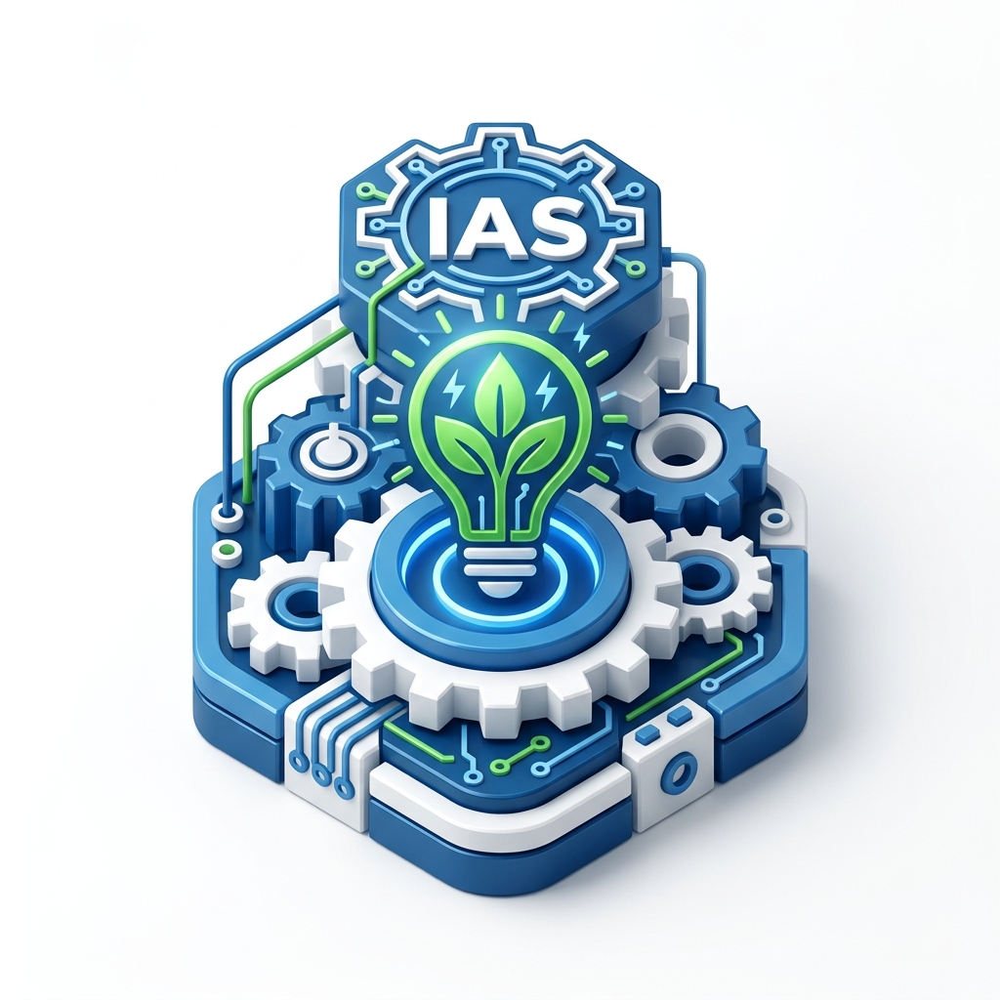

IEEE Industry Applications Society
Formed: 19th Dec 2023
Approved by the IEEE MGA Board. Bridges the gap between theory and industry, focusing on electrical systems, industrial automation, and energy systems.